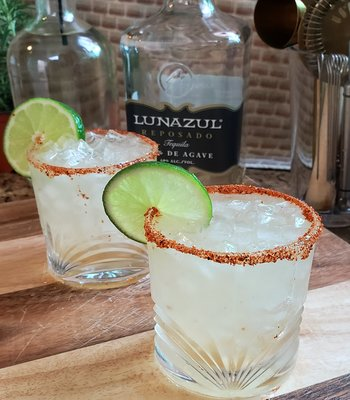
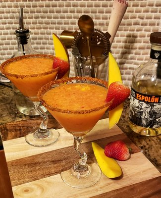

We are proud to share our drinks with you!
Herbal Revival A Bayside Mocktail

This Mocktail is the best Herbal drink that won't taste like medicine. Carefully crafte to bring the garden to your cocktail.
Receipe:
Enjoy!
Black & Tart Bayside Martini

This martini is one of my favorites. It's Sweet and tart, packed with lots of antioxidants.
Receipe:
Enjoy!
The Brazil Caipirinha Cocktail

This classic Caipirinha is not so ordinary. It is made with the best Cachaça.
Receipe:
Enjoy!
"Not So Classic" Margarita Bayside Margarita

Did you say Margarita? This margarita combines the sweetness of agave and tartness of limes.
Receipe:
Enjoy!
The Swirl Strawberry Mango Margarita

Did you say Strawberry Mango? This blended margarita is by far one of the greatest combos I could had ever thought of.
Receipe:
Enjoy!